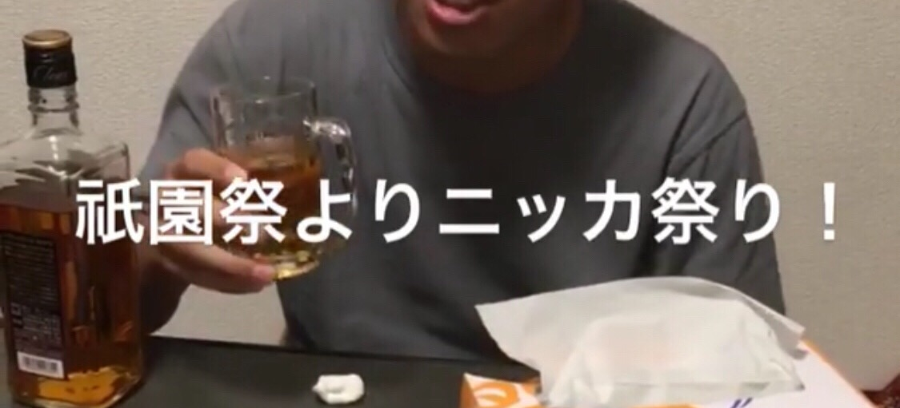

京都大学大学院修士1回生の三島隆といいます。あだ名はゆってぃです。幼稚園の頃からずっとゆってぃです。芸人のゆってぃよりも先にゆってぃでした。
僕のことを話すならまずこの圧倒的黒さにを触れずにはいられないですね。とにかく黒い。なんといっても黒い。とりあえず黒い。僕と初めてあった人のほとんどはその黒さに驚きます。左の写真そんなに黒くねーじゃん！と責められてしまいそうですが冬に撮ったので許してください。ちなみに黒いのは肌です、腹は黒くない(はず)です。
肌の話はこれくらいにして...
僕は小中高大学でサッカーをしています。割と熱しやすく冷めやすい性格なんですが、サッカーだけはずっと続いています。修士になった今でも時間を見つけてはボールを蹴っています。
ちなみに中学の時はクラブチームでサッカーを、部活動でソフトテニスをしていました。実はちょっと運動神経よかったりするんですよ。^^
小学4年
小学6年
中学1年
高校1年
高校3年
大学1年
大学2年
大学3年
大学4年
修士1回
サッカーを始める
中学受験に落ちる
クラブチームでサッカーをすると同時に部活動でソフトテニスを始める
高校のサッカー部に所属。勉強面では、学校の成績は240人中160位くらい
奇跡の追い上げをみせ京都大学工学部電気電子工学科合格
京都大学サッカーサークルanfini入会。大学生とはなんたるかを学ぶ。勉強するということを忘れる。
サークルのキャプテン選挙に落選、枠が空いていた副キャプテンに就任
学祭で乱闘に巻き込まれて病院に緊急搬送される
京都大学を卒業、悔いは無い
プログラミングに興味を持ち、未来電子インターンプログラミングコースに参加

写真を見てもらえば分かるとおり、僕はお酒、特にブラックニッカを飲むのが好きです。かなりの頻度で飲み会をしています。ピークは3回生のときでほぼ毎日飲み会をしていました。あまりにも高頻度で飲み会をしていたのでふと気になって3回生のときに飲んだお酒の量を計算してみました。
まず、飲み会頻度は週４回、飲むお酒はすべてブラックニッカ720mL(アルコール度数37%)とします。僕らの飲み会では一度の飲み会で平均して一人あたり1瓶の半分を消費します。あくまでこれは平均で、僕はそれなりに飲めるほうなので、一回の飲み会で飲む量を500mLとします。
まず、一週間で飲む量は500(mL)×4=2(L)です。
1年を48週間とすると、1年間での消費量は、2(L)×48=96(L)となります。
100L近くのブラックニッカを飲んでいるなんて恐ろしいですね。
ちなみに成人男性の1日の適正飲酒量はウィスキー60mLなので、1年間毎日飲酒した場合の適正飲酒量は、60(mL)×365=21.9(L)です。
体のためにも控えないといけませんね···